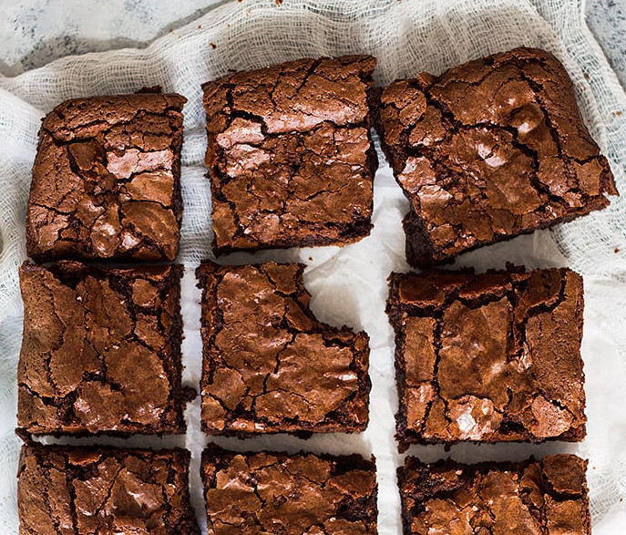

Chewy Brownies

Description
These homemade chewy brownies are this, chewy, fudgy and made completely from scratch. You'll never need to use a box mix again!
Ingredients
- 1¼ cups (265g) sugar
- ¼ cup (60ml) water
- 2 ounces (56.5g) unsweetened chocolate, chopped into small pieces
- ¾ cup (100g) all purpose flour
- ⅓ cup (30g) regular not dutch process unsweetened cocoa powder
- ½ cup (45g) semi sweet chocolate chips
- ¼ teaspoon baking powder
- Pinch of salt
- 2 large eggs, lightly beaten
- ½ cup (120ml) vegetable oil
- 1 teaspoon vanilla
Steps
- Preheat oven to 350 degrees F (177 degrees C). Line an 8x8 or 9x9 baking pan with parchment paper or foil and lightly grease with cooking spray. Set aside.
- In a small saucepan combine the sugar, water and unsweetened chocolate. Cook over medium-low heat just until chocolate is melted and smooth. The sugar will not be completely dissolved. Let mixture cool slightly (about 5 min).
- In a large bowl add mix together the flour (spoon flour into measuring cup and level off with the back side of a knife for accurate measurement), cocoa powder (spoon cocoa powder into measuring cup and level off with the back of a knife for accurate measurement), chocolate chips, baking powder and salt. Mix until combined.
- Pour in the oil, eggs, and vanilla. Pour in the melted chocolate and stir just until combined. Don't overmix!! Spread evenly into prepared pan and bake for 30-40 minutes or until a toothpick inserted comes out with SOME MOIST CRUMBS. DO NOT OVERBAKE if you want moist and chewy brownies. Cool completely before cutting.
Baker's Notes
- Overbaking will result in drier, crumbly brownies. The toothpick needs to have a few moist crumbs on it. Try to test them 5 minutes before the suggested time.
- This recipe may be doubled and baked in a 9x13 pan. You may need to add a few extra minutes to the bake time.